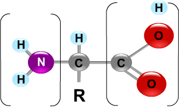
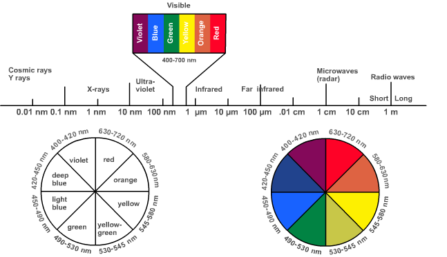

Quantitative Estimation of Amino Acids by Ninhydrin
Theory:
Amino acids are known as the building blocks of all proteins. There are 20 different amino acids commonly found in proteins. Amino acids are comprised of a carboxyl group and an amino group attached to the same carbon atom (the α carbon).
They vary in size, structure, electric charge and solubility in water because of the variation in their side chains ( R groups). Detection, quantification and identification of amino acids in any sample constitute important steps in the study of proteins.
The general structure of an amino acid is shown below:

Alpha amino acids react with Ninhydrin involved in the development of color which is explained by the following five steps.
1. alpha-amino acid + Ninhydrin ---> Reduced ninhydrin +Alpha amino acid +H2O
This is an oxidative deamination reaction that elicit two hydrogen from the alpha amino acid to produce an alpha – imino acid. Also the ninhydrin reduced and loses an oxygen atom with the formation of water molecule.
2. alpha-amino acid + H2O ---> alpha-keto acid +NH3
The rapid hydrolysis of NH group in the alpha – imino acid will cause the formation of an alpha- keto acid with an ammonia molecule. This alpha-keto acid further involved in the decarboxylation reaction of step.
3. alpha-keto acid + NH3 ---> aldehyde + CO2
Under a heated condition to form an aldehyde that has one less carbon atom than the original amino acid. A carbon dioxide molecule is produced along with aldehyde. These first three steps produce the reduced ninhydrin and ammonia that are required for the production of color .The overall reaction for the above reactions is simply explained in Reaction (4) as follows:
4. alpha-amino acid + 2 ninhydrin ---> CO2 + aldehyde + final complex(BLUE) + 3H2O
In summary, ninhydrin, which is originally yellow, reacts with amino acid and turns deep purple. It is this purple color that is detected in this method. Ninhydrin will react with a free alpha-amino group, NH2-C-COOH. This group is present in all amino acids, proteins or peptides. Whereas, the decarboxylation reaction will proceed for a free amino acid, it will not happen for peptides and proteins. Theoretically only amino acids produce color with ninhydrin reagent. However, one should always check out the possible interference from peptides and proteins by performing blank tests especially when such solutions are readily available. For example, one can simply add the ninhydrin reagent to a solution of only proteins and see if there is any color development. There is no excuse for failing to perform such a vital test when the sample mixture contains both proteins and amino acids. There are also reports that chemical compounds other than amino acids also respond positively to this reaction.
The ninhydrin reaction, one of the most important method of detecting amino acids, both technically and historically, has been conventionally used to detect their microgram amounts. When amino acids with a free alpha amino groups are treated with an excess of ninhydrin, they yield a purple colored product. Under appropriate conditions, the color intensity produced is proportional to the amino acid concentration.
The primary amino groups react with ninhydrin to form the purple colour dye now called Ruhemann's purple (RP) was discovered by Siegfried Ruhemann in 1910. Iminoacids like proline, the guanidino group of arginine, the amide groups of asparagine, the indole ring of tryptophan, the sulfhydryl group of cysteine, amino groups of cytosine and guanine, and cyanide ions also react with ninhydrin to form various chromophores that can be analyzed.
The overall reaction can be written as follows:
Primary amines also react with ninhydrin, but do not liberate of CO2. [ Caution : Ninhydrin is a very reactive oxidizing agent, so should be handled with care].
Several other convenient reagents are available which can react with the alpha amino group to form colored or fluorescent derivatives. These include fluorescamine, dansyl chloride, dabsyl chloride, etc., used in the detection of trace amounts of amino acids at the nanogram level.
In the quantitative estimation of amino acid using Ninhydrin reagent, the absorbance of the Ruhemann's purple formed by the reaction at 570nm is measured. For imino acids, the absorbtion happens at 440nm. The principle behind the colorimetric estimation is given below:
Principle of the Colorimeter:
Measurement of Absorbance (A):
Unknown compounds may be identified by their characteristic absorption spectra in the ultraviolet, visible or infrared regions. Enzyme-catalysed reactions frequently can be followed by measuring spectrophotometrically the appearance of a product or disappearance of a substrate. A spectrophotometer /colorimeter is an instrument for measuring the absorbance of a solution by measuring the amount of light of a given wavelength that is transmitted by a sample.
Light and Spectrum profile:
Light can be categorized according to its wavelength. Figure 1 shows the relationship between the wavelength of light and the common types of electromagnetic radiation. Light in the short wavelengths of 200 to 400 nm is referred to as ultraviolet (UV). Light in the longer wavelengths of 700 to 900 nm is referred to as near infrared (near IR).

Visible light falls between the wavelengths of 400 and 700 nm. All the colors visible to human eye falls under this wavelength range. Any solution that contains a compound that absorbs light in the visible region will appear colored to the eye. The solution is colored because specific wavelengths of light are absorbed as they pass through the solution. Then, the only light that the eye will perceive are the wavelengths of light that are transmitted (not absorbed).
Beer-Lambert Law:
The Beer-Lambert Law states that the amount of light absorbed is proportional to the number of molecules of absorbing substance in the light path, ie., absorption is proportional both to the concentration of the sample solution and to the length of the light path through the solution. This relationship can be expressed as follows:
Absorbance, A= ε x c x l
c = concentration of the sample (in Moles/liter),
l = length of the light path through the solution (in cm)
ε = molar extinction coefficient
To determine the absolute concentration of a pure substance, a standard curve is constructed from the known concentrations and using that standard curve, the absorbance reading of the unknown concentration was determined. The determination of unknown concentration from the standard curve is done by drawing a line parallel to the X- axis from the point on the Y axis that corresponds to the absorbance of the unknown. This line will be made to intersect the standard curve drawn, and is extended vertically such that it meets the X-axis and the concentration of unknown is read from the X-axis. A typical standard curve is depicted in the figure.